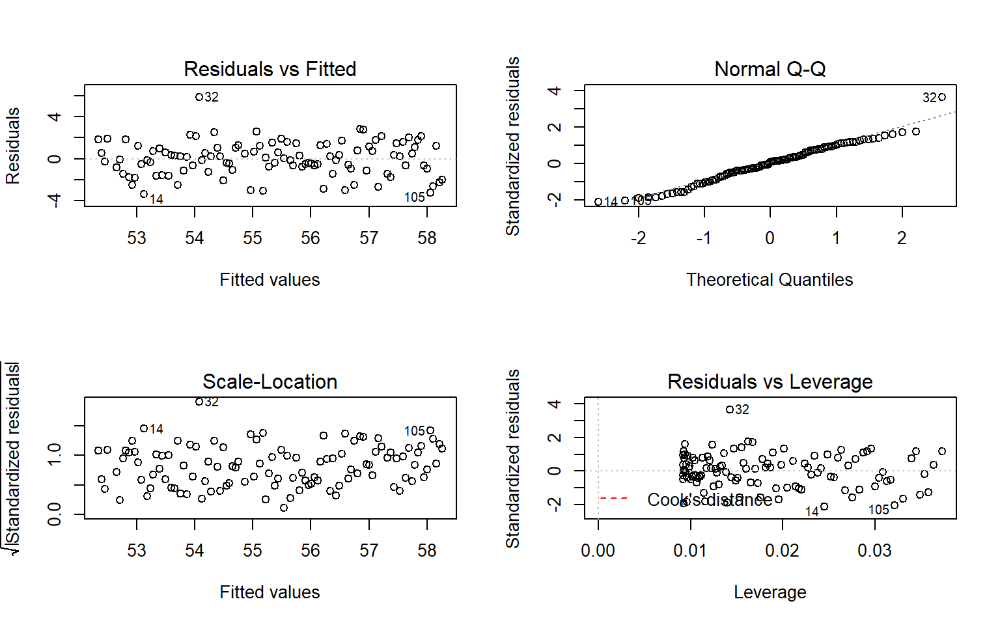

Chapter 7 Simple linear regression inference
7.1 Model
In Chapter 6, we learned how to estimate and interpret correlations and regression equations with a single predictor variable (simple linear regression or SLR). We carefully explored the variety of things that could go wrong and how to check for problems in regression situations. In this chapter, that work provides the basis of performing statistical inference that mainly focuses on the population slope coefficient based on the sample slope coefficient. As a reminder, the estimated regression model is \(\hat{y}_i = b_0 + b_1x_i\). the population regression equation is \(y_i = \beta_0 + \beta_1x_i + \epsilon_i\). Where \(\beta_0\) is the population (or true) y-intercept and \(\beta_1\) is the population (or true) slope coefficient. These are population parameters (fixed but typically unknown). This model can be re-written to think about different components and their roles. The mean of a random variable is statistically denoted as \(E(y_i)\), the expected value of \(\mathbf{y_i}\), or as \(\mu_{y_i}\) and the mean of the response variable in a simple linear model is specified by \(E(y_i) = \mu_{y_i} = \beta_0 + \beta_1x_i\). This uses the true regression line to define the model for the mean of the responses as a function of the value of the explanatory variable.
The other part of any statistical model is specifying a model for the variability around the mean. There are two aspects to the variability to specify here – the shape of the distribution and the spread of the distribution. This is where the normal distribution and our “normality assumption” re-appears. And for normal distributions, we need to define a variance parameter, \(\sigma^2\). Combined, the complete regression model is
\[y_i \sim N(\mu_{y_i},\sigma^2), \text{ with } \mu_{y_i} = \beta_0 + \beta_1x_i,\]
which can be read as “y follows a normal distribution with mean mu-y and variance sigma-squared”. This also implies that the random variability around the true mean, the errors, follow a normal distribution with mean 0 and that same variance, \(\epsilon_i \sim N(0,\sigma^2)\). The true deviations (\(\epsilon_i\)) are once again estimated by the residuals, \(e_i = y_i - \hat{y}_i\) = observed response – predicted response. We can use the residuals to estimate \(\sigma\), which is also called the residual standard error, \(\hat{\sigma} = \sqrt{\Sigma e^2_i / (n-2)}\). We will find this quantity near the end of the regression output as discussed below so the formula is not heavily used here. This provides us with the three parameters that are estimated as part of our SLR model: \(\beta_0, \beta_1,\text{ and } \sigma\).
These definitions also formalize the assumptions implicit in the regression model:
The errors follow a normal distribution (Normality assumption).
The errors have the same variance (Constant variance assumption).
The observations are independent (Independence assumption).
The model for the mean is “correct” (Linearity, No Influential points, Only one group).
The diagnostics described at the end of Chapter 6 provide techniques for checking these assumptions – meeting these assumptions is fundamental to having a regression line that we trust and inferences from it that we also can trust.
To make this clearer, suppose that in the Beers and BAC study that they had randomly assigned 20 students to consume each number of beers. We would expect some variation in the BAC for each group of 20 at each level of Beers but that each group of observations will be centered at the true mean BAC for each number of Beers. The regression model assumes that the BAC values are normally distributed around the mean for each Beer level, \(\text{BAC}_i \sim N(\beta_0 + \beta_1\text{ Beers}_i,\sigma^2)\), with the mean defined by the regression equation. We actually do not need to obtain more than one observation at each \(x\) value to make this assumption or assess it, but the plots below show you what this could look like. The sketch in Figure 7.1 attempts to show the idea of normal distributions that are centered at the true regression line, all with the same shape and variance that is an assumption of the regression model.
Figure 7.1: Sketch of assumed normal distributions for the responses centered at the regression line.
Figure 7.2 contains simulated realizations from a normal distribution of 20 subjects at each Beer level around the assumed true regression line with two different residual SEs of 0.02 and 0.06. The original BAC model has a residual SE of 0.02 but had many fewer observations at each Beer value.

Figure 7.2: Simulated data for Beers and BAC assuming two different residual standard errors (0.02 and 0.06).
Along with getting the idea that regression models define normal distributions in the y-direction that are centered at the regression line, you can also get a sense of how variable samples from a normal distribution can appear. Each distribution of 20 subjects at each \(x\) value came from a normal distribution but there are some of those distributions that might appear to generate small outliers and have slightly different variances. This can help us to remember to not be too particular when assessing assumptions and allow for some variability in spreads and a few observations from the tails of the distribution to occasionally arise.
In sampling from the population, we expect some amount of variability of each estimator around its true value. This variability leads to the potential variability in estimated regression lines (think of a suite of potential estimated regression lines that would be created by different random samples from the same population). Figure 7.3 contains the true regression line (bold, red) and realizations of the estimated regression line in simulated data based on results similar to the real data set.

Figure 7.3: Variability in realized regression lines based on sampling variation.
This variability due to random sampling is something that needs to be properly accounted for to take the single estimated regression line to make inferences about the true line and parameters based on the sample-based estimates. The next sections develop those inferential tools.
7.2 Confidence Interval and Hypothesis tests for the slope and intercept
Our inference techniques will resemble previous material with an interest in forming confidence intervals and doing hypothesis testing, although the interpretation of confidence intervals for slope coefficients take some extra care. Remember that the general form of any parametric confidence interval is
\[\text{estimate} \mp t^*\text{SE}_{estimate},\]
so we need to obtain the appropriate standard error for regression model coefficients and the degrees of freedom to define the \(t\)-distribution to look up \(t^*\). We will find the \(\text{SE}_{b_0}\) and \(\text{SE}_{b_1}\) in the model summary. The degrees of freedom for the \(t\)-distribution in simple linear regression are \(\mathbf{df=n-2}\). Putting this together, the confidence interval for the true y-intercept, \(\beta_0\), is \(\mathbf{b_0 \mp t^*_{n-2}}\textbf{SE}_{\mathbf{b_0}}\) although this confidence interval is rarely of interest. The confidence interval that is almost always of interest is for the true slope coefficient, \(\beta_1\), that is \(\mathbf{b_1 \mp t^*_{n-2}}\textbf{SE}_{\mathbf{b_1}}\). The slope confidence interval is used to do two things: (1) inference for the amount of change in the mean of \(y\) for a unit change in \(x\) in the population and (2) to potentially do hypothesis testing by checking whether 0 is in the CI or not. The sketch in Figure 7.4 illustrates the roles of the CI for the slope in terms of determining where the population slope coefficient might be – centered at the sample slope coefficient – our best guess for the true slope. This sketch informs an interpretation of the slope coefficient confidence interval:

Figure 7.4: Sketch of the role of the CI for slope in terms of determining where the population slope coefficient might be.
For a 1 [units of X] increase in X, we are ___ % confident that the true change in the mean of Y will be between LL and UL [units of Y].
In this interpretation, LL and UL are the calculated lower and upper limits of the confidence interval. This builds on our previous interpretation of the slope coefficient, adding in the information about pinning down the true change (population change) in the mean of the response variable. The interpretation of the y-intercept CI is:
For an x of 0 [units of X], we are 95% confident that the true mean of Y will be between LL and UL [units of Y].
This is really only interesting if we’ll see a method for generating CIs for the true mean at potentially more interesting values of \(x\) in Section 7.8. To trust the results from these confidence intervals, all the regression validity conditions need to be met (or at least close to met).
The only hypothesis test of interest in this situation is for the slope coefficient. To develop the hypotheses of interest in SLR, note the effect of having \(\beta_1=0\) in the mean of the regression equation, \(\mu_{y_i} = \beta_0 + \beta_1x_i = \beta_0 + 0x_i = \beta_0\). This is the “intercept-only” or “mean-only” model that suggests that the mean of \(y\) does not vary with different values of \(x\) as it is always \(\beta_0\). We saw this model in the ANOVA material as the reduced model when the null hypothesis of no difference in the true means across the groups was true. Here, this is the same as saying that there is no linear relationship between \(x\) and \(y\), or that \(x\) is of no use in predicting \(y\), or that we make the same prediction for \(y\) for every value of \(x\). Thus
\[\boldsymbol{H_0: \beta_1=0}\]
is a test for no linear relationship between \(\mathbf{x}\) and \(\mathbf{y}\) in the population. The alternative of \(\boldsymbol{H_A: \beta_1\ne 0}\) that there is some linear relationship between \(x\) and \(y\) in the population, is our main test of interest in these situations. It is also possible to test greater than or less than alternatives in certain situations.
Test statistics for regression coefficients are developed, if assumptions are met, using the \(t\)-distribution with \(n-2\) degrees of freedom. The \(t\)-test statistic is generally
\[t=\frac{b_i}{\text{SE}_{b_i}}\]
with the main interest in the test for \(\beta_1\) based on \(b_1\) for now. The p-value would be calculated using the two-tailed area from the \(t_{n-2}\) distribution calculated using the pt function. The p-value to test these hypotheses is also provided in the model summary as we will see below.
The greater than or less than alternatives can have interesting interpretations in certain situations. For example, the greater than alternative \(\left(\boldsymbol{H_A: \beta_1 > 0}\right)\) tests an alternative of a positive linear relationship, with the p-value extracted just from the right tail of the same \(t\)-distribution. This could be used when a researcher would only find a result “interesting” if a positive relationship is detected, such as in the study of tree height and tree diameter where a researcher might be justified in deciding to test only for a positive linear relationship. Similarly, the left-tailed alternative is also possible, \(\boldsymbol{H_A: \beta_1 < 0}\). To get one-tailed p-values from two-tailed results (the default), first check that the observed test statistic is in the direction of the alternative (\(t>0\) for \(H_A:\beta_1>0\) or \(t<0\) for \(H_A:\beta_1<0\)). If these conditions are met, then the p-value for the one-sided test from the two-sided version is found by dividing the reported p-value by 2. If \(t>0\) for \(H_A:\beta_1>0\) or \(t<0\) for \(H_A:\beta_1<0\) are not met, then the p-value would be greater than 0.5 and it would be easiest to look it up directly using pt.
We can revisit a couple of examples for a last time with these ideas in hand to complete the analyses.
- For the Beers, BAC data, the 95% confidence for the true slope coefficient, \(\beta_1\), is
\[\begin{array} \boldsymbol{b_1 \mp t^*_{n-2}} \textbf{SE}_{\boldsymbol{b_1}} & \boldsymbol{= 0.01796 \mp 2.144787 * 0.002402} \\ & \boldsymbol{= 0.01796 \mp 0.00515} \\ & \boldsymbol{\rightarrow (0.0128, 0.0231).} \end{array}\]
You can find the components of this calculation in the model summary and from qt(0.975, df=n-2) which was 2.145 for the \(t^*\)-multiplier. Be careful not to use the \(t\)-value of 7.48 in the model summary to make confidence intervals – that is the test statistic used below. The related calculations are shown at the bottom of the following code:
m1 <- lm(BAC~Beers, data=BB)
summary(m1)##
## Call:
## lm(formula = BAC ~ Beers, data = BB)
##
## Residuals:
## Min 1Q Median 3Q Max
## -0.027118 -0.017350 0.001773 0.008623 0.041027
##
## Coefficients:
## Estimate Std. Error t value Pr(>|t|)
## (Intercept) -0.012701 0.012638 -1.005 0.332
## Beers 0.017964 0.002402 7.480 2.97e-06
##
## Residual standard error: 0.02044 on 14 degrees of freedom
## Multiple R-squared: 0.7998, Adjusted R-squared: 0.7855
## F-statistic: 55.94 on 1 and 14 DF, p-value: 2.969e-06qt(0.975, df=14) # t* multiplier for 95% CI## [1] 2.1447870.017964 + c(-1,1)*qt(0.975, df=14)*0.002402## [1] 0.01281222 0.02311578qt(0.975, df=14)*0.002402## [1] 0.005151778We can also get the confidence interval directly from the confint function run on our regression model, saving some calculation effort and providing both the CI for the y-intercept and the slope coefficient.
confint(m1)## 2.5 % 97.5 %
## (Intercept) -0.03980535 0.01440414
## Beers 0.01281262 0.02311490We interpret the 95% CI for the slope coefficient as follows: For a 1 beer increase in number of beers consumed, we are 95% confident that the true change in the mean BAC will be between 0.0128 and 0.0231 g/dL. While the estimated slope is our best guess of the impacts of an extra beer consumed based on our sample, this CI provides information about the likely range of potential impacts on the mean in the population. It also could be used to test the two-sided hypothesis test and would suggest that we should reject the null hypothesis since the confidence interval does not contain 0.
The width of the CI, loosely the precision of the estimated slope, is impacted by the variability of the observations around the estimated regression line, the overall sample size, and the positioning of the x-observations. Basically all those aspects relate to how “clearly” known the regression line is and that determines the estimated precision in the slope. For example, the more variability around the line that is present, the more uncertainty there is about the correct line to use (Least Squares (LS) can still find an estimated line but there are other lines that might be “close” to its optimizing choice). Similarly, more observations help us a better estimate of the mean – an idea that permeates all statistical methods. Finally, the location of x-values can impact the precision in a slope coefficient. We’ll revisit this in the context of multi-collinearity in the next chapter, and often we have no control of x-values, but just note that different patterns of x-values can lead to different precision of estimated slope coefficients60.
For hypothesis testing, we will almost always stick with two-sided tests in regression modeling as it is a more conservative approach and does not require us to have an expectation of a direction for relationships a priori. In this example, the null hypothesis for the slope coefficient is that there is no linear relationship between Beers and BAC in the population. The alternative hypothesis is that there is some linear relationship between Beers and BAC in the population. The test statistic is \(t=0.01796/0.002402 =7.48\) which, if assumptions hold, follows a \(t(14)\) distribution. The model summary provides the calculation of the test statistic and the two-sided test p-value of \(2.97\text{e-6} = 0.00000297\). So we would just report p-value < 0. 0001. This suggests we should reject the null hypothesis and conclude that there is evidence at the 5% significance level of a linear relationship between Beers and BAC in the population. Because of the random assignment, we can also say that drinking beers causes changes in BAC but, because the sample was of volunteers, we cannot infer that these results would hold in the general population of OSU students or more generally.
There are also results for the y-intercept in the output. The 95% CI is from -0.0398 to 0.0144, that the true mean BAC for a 0 beer consuming subject is between -0.0398 to 0.01445. This is really not a big surprise but possibly is comforting to know that these results would fail to reject the null hypothesis that the true mean BAC for 0 Beers is 0. Finding no evidence of a difference from 0 makes sense and makes the estimated y-intercept of -0.013 not so problematic. In other situations, the results for the y-intercept may be more illogical but this will often be because the y-intercept is extrapolating far beyond the scope of observations. The y-intercept’s main function in regression models is to be at the right level for the slope to “work” to make a line that describes the responses and thus is usually of lesser interest.
As a second example, we can revisit modeling the Hematocrit of female Australian athletes as a function of body fat %. The sample size is \(n=99\) so the df are 97 in the analysis. In Chapter 6, the relationship between Hematocrit and body fat % for females appeared to be a weak negative linear association. The 95% confidence interval for the slope is -0.187 to 0.0155. For a 1 % increase in body fat %, we are 95% confident that the change in the true mean Hematocrit is between -0.187 and 0.0155 % of blood. This suggests that we would fail to reject the null hypothesis of no linear relationship at the 5% significance level because this CI contains 0 – we can’t reject the null that the true slope is 0. In fact the p-value is 0.0965 which is larger than 0.05 which provides a consistent conclusion with using the 95% confidence interval to perform a hypothesis test. Either way, we would conclude that there is not enough evidence at the 5% significance level to conclude that there is some linear relationship between bodyfat and Hematocrit in the population of female Australian athletes. If your standards were different, say if you had elected to test at the 10% significance level, you might have a different opinion about the evidence against the null hypothesis here. For this reason, we sometimes interpret this sort of marginal result as having some evidence against the null but certainly not strong evidence.
require(alr3)
data(ais)
aisR2<-ais[-c(56,166),c("Ht","Hc","Bfat","Sex")]
m2 <- lm(Hc~Bfat, data=aisR2[aisR2$Sex==1,]) # Results for Females
summary(m2)##
## Call:
## lm(formula = Hc ~ Bfat, data = aisR2[aisR2$Sex == 1, ])
##
## Residuals:
## Min 1Q Median 3Q Max
## -5.2399 -2.2132 -0.1061 1.8917 6.6453
##
## Coefficients:
## Estimate Std. Error t value Pr(>|t|)
## (Intercept) 42.01378 0.93269 45.046 <2e-16
## Bfat -0.08504 0.05067 -1.678 0.0965
##
## Residual standard error: 2.598 on 97 degrees of freedom
## Multiple R-squared: 0.02822, Adjusted R-squared: 0.0182
## F-statistic: 2.816 on 1 and 97 DF, p-value: 0.09653confint(m2)## 2.5 % 97.5 %
## (Intercept) 40.1626516 43.86490713
## Bfat -0.1856071 0.01553165One more worked example is provided from the Montana fire data. In this example pay particular attention to how we are handling the units of the response variable, log-hectares, and to the changes to doing inferences at the 1% significance and 99% confidence levels, and where you can find the needed results in the following output:
mtfires <- read.csv("http://www.math.montana.edu/courses/s217/documents/climateR2.csv")
mtfires$loghectacres <- log(mtfires$hectacres)
fire1 <- lm(loghectacres~Temperature, data=mtfires)
summary(fire1)##
## Call:
## lm(formula = loghectacres ~ Temperature, data = mtfires)
##
## Residuals:
## Min 1Q Median 3Q Max
## -3.0822 -0.9549 0.1210 1.0007 2.4728
##
## Coefficients:
## Estimate Std. Error t value Pr(>|t|)
## (Intercept) -69.7845 12.3132 -5.667 1.26e-05
## Temperature 1.3884 0.2165 6.412 2.35e-06
##
## Residual standard error: 1.476 on 21 degrees of freedom
## Multiple R-squared: 0.6619, Adjusted R-squared: 0.6458
## F-statistic: 41.12 on 1 and 21 DF, p-value: 2.347e-06confint(fire1, level=0.99)## 0.5 % 99.5 %
## (Intercept) -104.6477287 -34.921286
## Temperature 0.7753784 2.001499qt(0.995, df=21)## [1] 2.83136Based on the estimated regression model, we can say that if the average temperature is 0, we expect that, on average, the log-area burned would be -69.8 log-hectares.
From the regression model summary, \(b_1=1.39\) with \(\text{SE}_{b_1}=0.2165\) and \(\mathbf{t=6.41}\)
There were \(n=23\) measurements taken, so \(\mathbf{df=n-2=23-3=21}\)
Suppose that we want to test for a linear relationship between temperature and log-hectares burned:
\[H_0: \beta_1=0\]
- In words, the true slope coefficient between Temperature and log-area burned is 0 OR there is no linear relationship between Temperature and log-area burned in the population.
\[H_A: \beta_1\ne 0\]
- In words, the alternative states that the true slope coefficient between Temperature and log-area burned is not 0 OR there is a linear relationship between Temperature and log-area burned in the population.
Test statistic: \(t = 1.39/0.217 = 6.41\)
- Assuming the null hypothesis to be true (no linear relationship), the \(t\)-statistic follows a \(t\)-distribution with \(n-2 = 23-2=21\) degrees of freedom.
p-value:
From the model summary, the p-value is \(\mathbf{2.35*10^{-6}}\)
- Interpretation: There is less than a 0.01% chance that we would observe slope coefficient like we did or something more extreme (greater than 1.39 log(hectares)/\(^\circ F\)) if there were in fact no linear relationship between temperature (\(^\circ F\)) and log-area burned (log-hectares) in the population.
Decision: At the 1% significance level (\(\alpha=0.01\)), the p-value is less than \(\alpha\), so reject \(H_0\).
Conclusion: There is strong evidence to reject the null hypothesis of no linear relationship and conclude that there is, in fact, a linear relationship between Temperature and log(Hectares) burned. Since we have a time series of results, our inferences pertain to the results we could have observed for these years but not for years we did not observe – so just for the true slope for this sample of years. Because we can’t randomly assign the amount of area burned, we cannot make causal inferences – there are many reasons why both the average temperature and area burned would vary together that would not involve a direct connection between them.
\[\text{99% CI for } \beta_1: \boldsymbol{b_1 \mp t^*_{n-2}}\textbf{SE}_{\boldsymbol{b_1}} \rightarrow 1.39 \mp 2.831\bullet 0.217 \rightarrow (0.78, 2.00)\]
Interpretation of 99% CI for slope coefficient:
For a 1 degree F increase in Temperature, we are 99% confident that the change in the true mean log-area burned is between 0.78 and 2.00 log(Hectares).
Another way to interpret this is:
- For a 1 degree F increase in Temperature, we are 99% confident that the mean Area Burned will change by between 0.78 and 2.00 log(Hectares) in the population.
Also \(R^2\) is 66.2%, which tells us that Temperature explains 66.2% of the variation in log(Hectares) burned. Or that the linear regression model built using Temperature explains 66.2% of the variation in yearly log(Hectares) burned.
7.3 Bozeman temperature trend
For a new example, consider the yearly average maximum temperatures in Bozeman, MT. For over 100 years, daily measurements have been taken of the minimum and maximum temperatures at hundreds of weather stations across the US. In early years, this involved manual recording of the temperatures and resetting the thermometer to track the extremes for the following day. More recently, these measures have been replaced by digital temperature recording devices that continue to track this sort of information with much less human effort and, possibly, errors. This sort of information is often aggregated to monthly or yearly averages to be able to see “on average” changes from month-to-month or year-to-year as opposed to the day-to-day variation in the temperature - something that we are all too familiar with in our part of the country (see http://fivethirtyeight.com/features/which-city-has-the-most-unpredictable-weather/ for an interesting discussion of weather variability where Great Falls, MT had a very high rating on “unpredictability”). Often the local information is aggregated further to provide regional, hemispheric, or even global average temperatures. Climate change research involves attempting to quantify the changes over time in these sorts of records.
These data were extracted from the National Oceanic and Atmospheric Administration’s National Centers for Environmental Information’s database (http://www.ncdc.noaa.gov/cdo-web/) and we will focus on the yearly average of the monthly averages of the daily maximum temperature (we can call them yearly average maximum temperatures but note that it was a little more complicated than that to arrive at the response variable) in Bozeman in degrees F from 1901 to 2014.
bozemantemps <- read.csv("http://www.math.montana.edu/courses/s217/documents/BozemanMeanMax.csv")
summary(bozemantemps)## meanmax Year
## Min. :49.75 Min. :1901
## 1st Qu.:53.97 1st Qu.:1930
## Median :55.43 Median :1959
## Mean :55.34 Mean :1958
## 3rd Qu.:57.02 3rd Qu.:1986
## Max. :60.05 Max. :2014length(bozemantemps$Year) #Some years are missing (1905, 1906, 1948, 1950,1995)## [1] 109require(car)
scatterplot(meanmax~Year, data=bozemantemps,
ylab="Mean Maximum Temperature (degrees F)", spread=F,
main="Scatterplot of Bozeman Yearly Average Max Temperatures")
Figure 7.5: Scatterplot of average yearly maximum temperatures in Bozeman from 1900 to 2014.
The scatterplot in Figure 7.5 shows the results between 1901 and 2014 based on a sample of \(n=109\) years because four years had too many missing months to fairly include in the responses. Missing values occur for many reasons and in this case were likely just machine or human error61. These are time series data and in time series analysis we assume that the population of interest for inference is all possible realizations from the underlying process over this timeframe even though we only ever get to observe one realization. In terms of climate change research, we would want to (a) assess evidence for a trend over time (hopefully assessing whether any observed trend is clearly different from a result that could have been observed by chance if there really is no change over time in the true process) and (b) quantify the size of the change over time along with the uncertainty in that estimate relative to the underlying true mean change over time. The hypothesis test for the slope answers (a) and the confidence interval for the slope addresses (b). We also should be concerned about problematic (influential) points, changing variance, and potential nonlinearity in the trend over time causing problems for the SLR inferences. The scatterplot suggests that there is a moderate or strong positive linear relationship between temperatures and year with some “wiggles” in the smoothing line at the beginning and end of the record. Smoothing lines can become quite untrustworthy at the edges of the data set, so discount the curving at the edges a bit. If the curving is real, it would suggest a less steep change before 1920, relatively linear change from 1930 to 1970, a small increase in slope through the mid-90s, and then a leveling off after that point. There also appears to be one potential large outlier in the late 1930s.
We’ll perform all 6+ steps of the hypothesis test for the slope coefficient and add a confidence interval interpretation for this example. First, we have to decide on our significance level (5% is a typical choice), our hypotheses (the 2-sided test would be a conservative choice and no one that does climate change research wants to be accused of taking a liberal approach in their analyses62) and our test statistic, \(t=\frac{b_1}{\text{SE}_{b_1}}\).
- Hypotheses for the slope coefficient test:
\[H_0: \beta_1=0 \text{ vs } H_A: \beta_1 \ne 0\] 2. Validity conditions:
Quantitative variables condition
- Both
Yearand yearly averageTemperatureare quantitative variables so are suitable for an SLR analysis.
- Both
Independence of observations
- There may be a lack of independence among years since a warm year might be followed by another warmer than average year. It would take more sophisticated models to account for this and the standard error on the slope coefficient could either get larger or smaller depending on the type of autocorrelation (correlation between neighboring time points or correlation with oneself at some time lag) present. This creates a caveat on these results but this model is often the first one researchers fit in these situations and often is reasonably correct even in the presence of some autocorrelation.
To assess the remaining conditions, we need to fit the regression model and use the diagnostic plots in Figure 7.6 to aid our assessment:
temp1 <- lm(meanmax~Year, data=bozemantemps) par(mfrow=c(2,2)) plot(temp1, add.smooth=F)Figure 7.6: Diagnostic plots of the Bozeman yearly temperature simple linear regression model.
Linearity of relationship
Examine the Residuals vs Fitted plot:
- There does not appear to be a clear curve remaining in the residuals so that initial curving in the smoothing line is not clearly showing up in the diagnostics so we should be able to proceed without worrying too much about the slight nonlinearity detected in the initial scatterplot.
Equal (constant) variance
- Examining the Residuals vs Fitted and the “Scale-Location” plots provide little to no evidence of changing variance. The variability does decrease slightly in the middle fitted values but those changes are really minor and present no real evidence of changing variability.
Normality of residuals
- Examining the Normal QQ-plot for violations of the normality assumption shows only one real problem in the outlier from the 32nd observation in the data set (1934) which was flagged as a large outlier in the original scatterplot. We should be careful about inferences that assume normality and contain this point in the analysis. We might consider running the analysis with it and without that point to see how much it impacts the results just to be sure it isn’t creating evidence of a trend because of a violation of the normality assumption. The next check reassures us that re-running the model without this point would only result in slightly changing the SEs and not the slopes.
No influential points:
There are no influential points displayed in the Residuals vs Leverage plot since the Cook’s D contours are not displayed.
- Note: by default this plot contains a smoothing line that is relatively meaningless, so ignore it if is displayed. We suppressed it using the
add.smooth=Foption inplot(temp1)but if you forget to do that, just ignore the smoothers in the diagnostic plots especially in the Residuals vs Leverage plot.
- Note: by default this plot contains a smoothing line that is relatively meaningless, so ignore it if is displayed. We suppressed it using the
This results tells us that the outlier was not influential. If you look back at the scatterplot, it was located near the middle of the observed \(x\text{'s}\) so its potential leverage is low. You can find its leverage based on the plot to be around 0.12 when there are observations in the data set with leverages over 0.3. The high leverage points occur at the beginning and the end of the record because they are at the edges of the observed \(x\text{'s}\) and most of these points follow the overall pattern fairly well.
So the main issues are with independence of observations and one non-influential outlier that might be compromising our normality assumption a bit.
Calculate the test statistic:
\(t=0.05244/0.00476 = 11.02\)
summary(temp1)## ## Call: ## lm(formula = meanmax ~ Year, data = bozemantemps) ## ## Residuals: ## Min 1Q Median 3Q Max ## -3.3779 -0.9300 0.1078 1.1960 5.8698 ## ## Coefficients: ## Estimate Std. Error t value Pr(>|t|) ## (Intercept) -47.35123 9.32184 -5.08 1.61e-06 ## Year 0.05244 0.00476 11.02 < 2e-16 ## ## Residual standard error: 1.624 on 107 degrees of freedom ## Multiple R-squared: 0.5315, Adjusted R-squared: 0.5271 ## F-statistic: 121.4 on 1 and 107 DF, p-value: < 2.2e-16Find the p-value:
From the model summary: p-value < 2e-16 or just < 0.0001
The test statistic is assumed to follow a \(t\)-distribution with \(n-2=109-2=107\) degrees of freedom. The p-value can be calculated as:
2*pt(11.02, df=107, lower.tail=F)## [1] 2.498481e-19Which is then reported as < 0.0001, which means that the chances of observing a slope coefficient as extreme or more extreme than 0.052 if the null hypothesis of no linear relationship is true is less than 0.01%.
Make a decision:
Reject the null hypothesis because the p-value is less than 0.05.
Write a conclusion:
There is strong evidence against the null hypothesis of no linear relationship between Year and yearly mean Temperature so we can conclude that there is, in fact, some linear relationship between Year and yearly mean maximum Temperature in Bozeman. We can conclude that this detected trend pertains to the Bozeman area in the years 1901 to 2014 but not outside of this area or time frame. We cannot say that time caused the observed changes since it was not randomly assigned and we cannot attribute the changes to any other factors because we did not consider them. But knowing that there was a trend toward increasing temperatures is an intriguing first step in a more complete analysis of changing climate in the area.
It is also good to report the percentage of variation that the model explains: Year explains 54.91% of the variation in yearly average maximum Temperature. If this value had been very small, we might discount the previous result. Since it is moderately large, that suggests that just by using a linear trend over time we can account for quite a bit of the variation in yearly average maximum temperatures in Bozeman. Note that the percentage of variation explained would get much worse if we tried to analyze the monthly or original daily maximum temperature data.
Interpreting a confidence interval provides more useful information than the hypothesis test here – instead of just assessing evidence against the null hypothesis, we can actually provide our best guess at the true change in the mean of \(y\) for a change in \(x\). Here, the 95% CI is (0.043, 0.062). This tells us that for a 1 year increase in change in the true mean of the yearly average maximum Temperatures in Bozeman is between 0.043 and 0.062 degrees F.
confint(temp1)## 2.5 % 97.5 %
## (Intercept) -65.83068375 -28.87177785
## Year 0.04300681 0.06187746Sometimes the scale of the x-variable makes interpretation a little difficult, so we can re-scale it to make it more interpretable. One option is to re-scale the variable and re-fit the regression model and the other (easier) option is to re-scale our interpretation. The idea here is that a 100-year change might be easier and more meaningful scale to interpret than a single year change. If we have a slope in the model of 0.052 (for a 1 year change), we can also say that a 100 year change in the mean is estimated to be 0.052*100 = 0.52\(^\circ F\). Similarly, the 95% CI for the population mean 100-year change would be from 0.43\(^\circ F\) to 0.62\(^\circ F\). In 2007, the IPCC (Intergovernmental Panel on Climate Change; http://www.ipcc.ch/publications_and_data/ar4/wg1/en/tssts-3-1-1.html) estimated the global temperature change from 1906 to 2005 to be 0.74\(^\circ C\) per decade or, scaled up, 7.4\(^\circ C\) per century (1.33\(^\circ F\)). There are many reasons why our local temperature trend might differ, including that our analysis was of average maximum temperatures and the IPCC was considering the average temperature (which was not measured locally or in most places in a good way until digital instrumentation was installed) and that local trends are likely to vary around the global average change based on localized environmental conditions.
One issue that arises in local studies of climate change is that researchers often consider these sorts of tests at many locations and on many response variables (if I did the maximum temperature, why not also do the same analysis of the minimum temperature time series as well? And if I did the analysis for Bozeman, what about Butte and Helena and…?). Remember our discussion of multiple testing issues in an ANOVA context when we compared lots of groups? This issue can arise when regression modeling is repeated in many similar data sets, say different sites or different response variables or both, in one study. Moore, Harper, and Greenwood (2007) considered the impacts on the assessment of evidence of trends of earlier spring onset timing in the Mountain West when the number of tests across many sites is accounted for. We found that the evidence for time trends decreases substantially but does not disappear. In a related study, Greenwood, Harper, and Moore (2011) found evidence for regional trends to earlier spring onset using more sophisticated statistical models. The main point here is to be careful when using simple statistical methods repeatedly if you are not accounting for the number of tests performed63.
Along with the confidence interval, we can also plot the estimated model (Figure 7.7 using a term-plot from the effects package (Fox, 2003). This is the same function we used for visualizing results in the ANOVA models and in its basic application you just need plot(allEffects(modelname)) but we enhanced our version a little. In regression models, we get to see the regression line along with bounds for 95% confidence intervals for the mean at every value of \(x\) that was observed (explained in next section). Note that there is also a rugplot on the x-axis showing you where values of the explanatory variable were obtained, which is useful to understanding how much information is available for different aspects of the line. Here it provides gaps for missing years of observations as sort of broken teeth in a comb.
require(effects)
plot(allEffects(temp1, xlevels=list(Year=bozemantemps$Year)),
grid=T)Figure 7.7: Term-plot for the Bozeman mean yearly maximum temperature linear regression model with 95% confidence interval bands for the mean in each year.
If we extended the plot for the model to Year=0, we could see the reason that the y-intercept in this model is -47.4\(^\circ F\). This is obviously a large extrapolation for these data and provides a silly result. However, in paleoclimate data that goes back thousands of years using tree rings, ice cores, or sea sediments, the estimated mean in year 0 might be interesting and within the scope of observed values. It all depends on the application.
To make the y-intercept more interesting for our data set, we can re-scale the \(x\text{'s}\) before we fit the model to have the first year in the data set (1901) be “0”. This is accomplished by calculating \(\text{Year2} = \text{Year}-1901\).
bozemantemps$Year2 <- bozemantemps$Year - 1901
summary(bozemantemps$Year2)## Min. 1st Qu. Median Mean 3rd Qu. Max.
## 0.00 29.00 58.00 57.27 85.00 113.00The new estimated regression equation is \(\widehat{\text{Temp}}_i = 52.34 + 0.052*\text{Year2}_i\). The slope and its test statistic are the same as in the previous model. The y-intercept has changed dramatically with a 95% from 51.72\(^\circ F\) to 52.96\(^\circ F\) for Year2=0. But we know that Year2 has a 0 value for 1901 because of our subtraction. That means that this CI is for the true mean in 1901 and is now at least somewhat interesting. If you revisit Figure 7.7 you will actually see that the displayed confidence intervals provide upper and lower bounds that match this result for 1901 – the y-intercept CI matches the 95% CI for the true mean.
temp2 <- lm(meanmax~Year2, data=bozemantemps)
summary(temp2)##
## Call:
## lm(formula = meanmax ~ Year2, data = bozemantemps)
##
## Residuals:
## Min 1Q Median 3Q Max
## -3.3779 -0.9300 0.1078 1.1960 5.8698
##
## Coefficients:
## Estimate Std. Error t value Pr(>|t|)
## (Intercept) 52.34126 0.31383 166.78 <2e-16
## Year2 0.05244 0.00476 11.02 <2e-16
##
## Residual standard error: 1.624 on 107 degrees of freedom
## Multiple R-squared: 0.5315, Adjusted R-squared: 0.5271
## F-statistic: 121.4 on 1 and 107 DF, p-value: < 2.2e-16confint(temp2)## 2.5 % 97.5 %
## (Intercept) 51.71913822 52.96339150
## Year2 0.04300681 0.06187746Ideally, we want to find a regression model that does not violate any assumptions, has a high \(\mathbf{R^2}\) value, and a slope coefficient with a small p-value. If any of these are not the case, then we are not completely satisfied with the regression and should be suspicious of any inference we perform. We can sometimes resolve some of the systematic issues noted above using transformations, discussed in Sections 7.5 and 7.6.
7.4 Randomizing inferences for the slope coefficient
Exploring permutation testing in SLR provides an opportunity to gauge the observed relationship against the sorts of relationships we would expect to see if there was no linear relationship between the variables. If the relationship is linear (not curvilinear) and the null hypothesis of \(\beta_1=0\) is true, then any configuration of the responses relative to the predictor variables is a good as any other. Consider the four scatterplots of the Bozeman temperature data versus Year and permuted versions of Year in Figure 7.8. First, think about which of the panels you think presents the most evidence of a linear relationship between Year and Temperature?

Figure 7.8: Plot of the Temperature responses versus four versions of Year, three of which are permutations of the Year variable relative to the Temperatures.
Hopefully you can see that panel (c) contains the most clear linear relationship among the choices. The plot in panel (c) is actually the real data set and pretty clearly presents itself as “different” from the other results. When we have small p-values, the real data set will be clearly different from the permuted results because it will be almost impossible to find a permuted data set that can attain as large a slope coefficient as was observed in the real data set64. This result ties back into our original interests in this climate change research situation – does our result look like it is different from what could have been observed just by chance if there were no linear relationship between \(x\) and \(y\)? It seems unlikely…
Repeating this permutation process and tracking the estimated slope coefficients, as \(T^*\), provides another method to obtain a p-value in SLR applications. This could also be performed on the \(t\)-statistic for the slope coefficient and would provide the same p-values but the sampling distribution would have a different x-axis scaling. In this situation, the observed slope of 0.052 is really far from any possible values that can be obtained using permutations as shown in Figure 7.9. The p-value would be reported as < 0.0001 for the two-sided test.
Tobs <- lm(meanmax~Year, data=bozemantemps)$coef[2]
Tobs## Year
## 0.05244213par(mfrow=c(1,2))
B <- 1000
Tstar <- matrix(NA,nrow=B)
for (b in (1:B)){
Tstar[b] <- lm(meanmax~shuffle(Year), data=bozemantemps)$coef[2]
}
pdata(abs(Tstar), abs(Tobs), lower.tail=F)## Year
## 0hist(Tstar, xlim=c(-1,1)*Tobs)
abline(v=c(-1,1)*Tobs, col="red", lwd=3)
plot(density(Tstar), main="Density curve of Tstar", xlim=c(-1,1)*Tobs)
abline(v=c(-1,1)*Tobs, col="red", lwd=3)
Figure 7.9: Permutation distribution of the slope coefficient in the Bozeman temperature linear regression model with bold vertical lines at \(\pm b_1=0.56\).
One other interesting aspect of exploring the permuted data sets as in Figure 7.8 is that the outlier in the late 1930s “disappears” in the permuted data sets because there were many other observations that were that warm, just none that happened around that time of the century in the real data set. This reinforces the evidence for changes over time that seem to be present in these data that old unusual years don’t look unusual in more recent years.
The permutation approach can be useful in situations where the normality assumption is compromised, but there are no influential points. In these situations, we might find more trustworthy p-values using permutations but only if we are working with an initial estimated regression equation that we generally trust. I personally like the permutation approach as a way of explaining what a p-value is actually measuring – the chance of seeing something like what we saw, or more extreme, if the null is true. And the previous scatterplots show what the “by chance” versions of this relationship might look like.
In a similar situation where we want to focus on confidence intervals for slope coefficients but are not completely comfortable with the normality assumption, it is also possible to generate bootstrap confidence intervals by sampling with replacement from the data set. This idea was introduced in Sections 2.8 and 2.9. This provides a 95% bootstrap confidence interval from 0.433 to 0.62, which almost exactly matches the parametric \(t\)-based confidence interval. The bootstrap distributions are very symmetric (Figure 7.10). The interpretation is the same and this result reinforces the other assessments that the parametric approach is not unreasonable except possibly for the independence assumption.
Tobs <- lm(meanmax~Year, data=bozemantemps)$coef[2]
Tobs## Year
## 0.05244213par(mfrow=c(1,2))
B <- 1000
Tstar <- matrix(NA,nrow=B)
for (b in (1:B)){
Tstar[b] <- lm(meanmax~Year, data=resample(bozemantemps))$coef[2]
}
quantiles <- qdata(Tstar, c(.025,.975))
quantiles## quantile p
## 2.5% 0.04331326 0.025
## 97.5% 0.06195345 0.975hist(Tstar,labels=T)
abline(v=Tobs,col="red",lwd=2)
abline(v=quantiles$quantile,col="blue",lwd=3)
plot(density(Tstar),main="Density curve of Tstar")
abline(v=Tobs,col="red",lwd=2)
abline(v=quantiles$quantile,col="blue",lwd=3)
Figure 7.10: Bootstrap distribution of the slope coefficient in the Bozeman temperature linear regression model with bold vertical lines delineating 95% confidence interval and observed slope of 0.52.
7.5 Transformations part I: Linearizing relationships
7.6 Transformations part II: Impacts on SLR interpretations: log(y), log(x), & both log(y) & log(x)
7.7 Confidence Interval for the mean and prediction Intervals for a new observation 270
7.8 Chapter summary
7.9 Important R code
7.10 Practice problems
There is an area of statistical research on how to optimally choose x-values to get the most precise estimate of a slope coefficient. In observational studies we have to deal with whatever pattern of \(x\text{'s}\) we ended up with. If you can choose, generate an even spread of \(x\text{'s}\) over some range of interest similar to what was used in the Beers vs BAC study to provide the best distribution of values to discover the relationship across the selected range of x-values.↩
It is actually pretty amazing that there are hundreds of locations with nearly complete daily records for over 100 years.↩
All joking aside, if researchers can find evidence of climate change using conservative methods (methods that reject the null hypothesis when it is true less often than stated), then their results are even harder to ignore.↩
The simplest adjustment for multiple testing is using a Bonferroni adjustment, where you multiply all the p-values by the number of tests performed. It controls the chances of at least one error to be same as your Type I error rate for one test.↩
It took many permutations to get competitor plots this close to the real data set and they really aren’t that close.↩